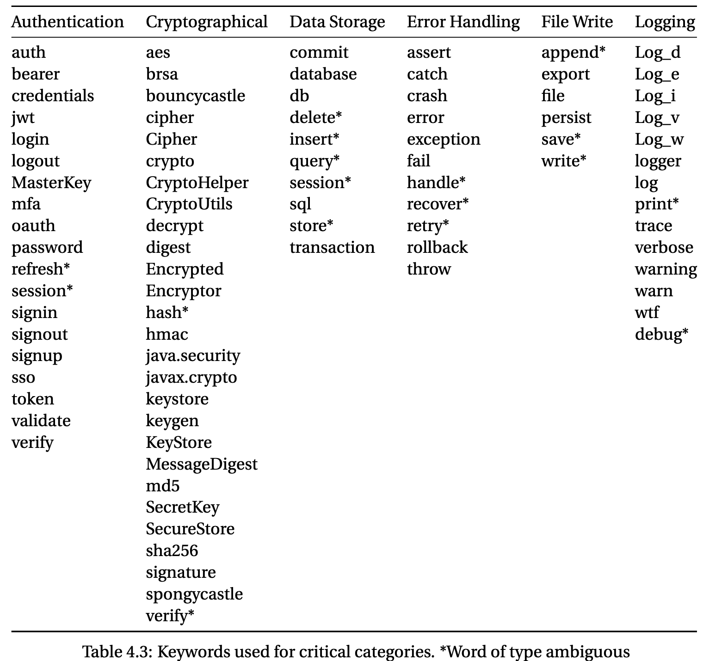
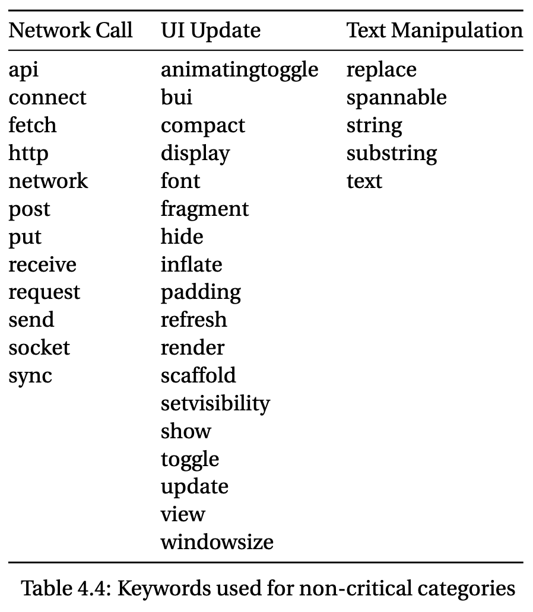
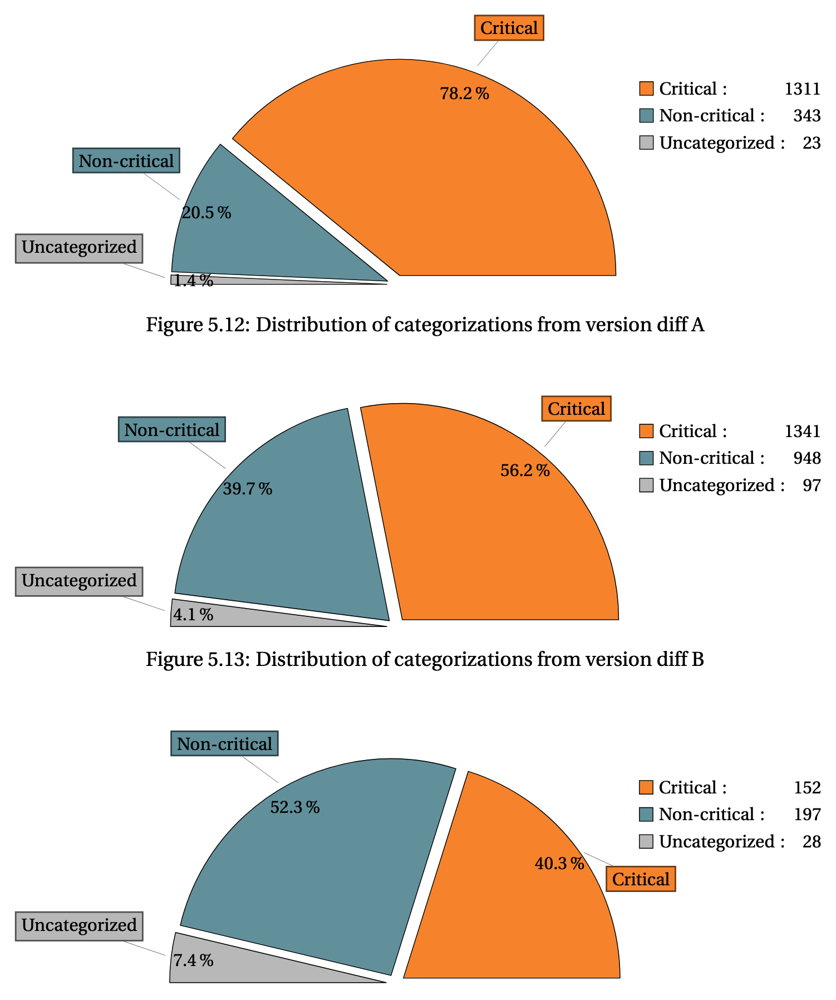
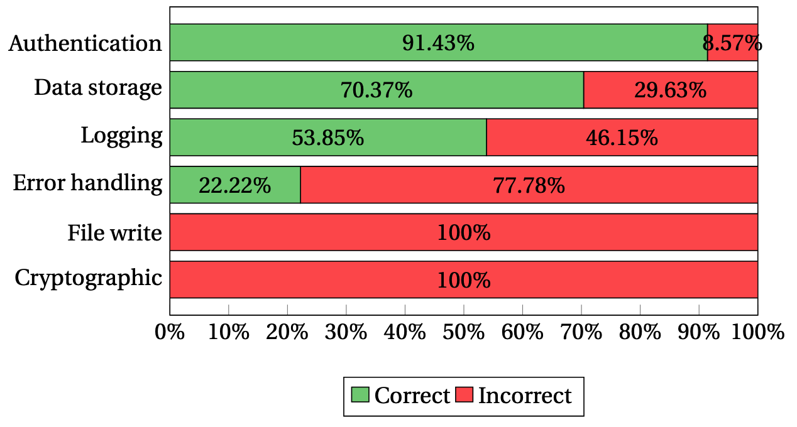
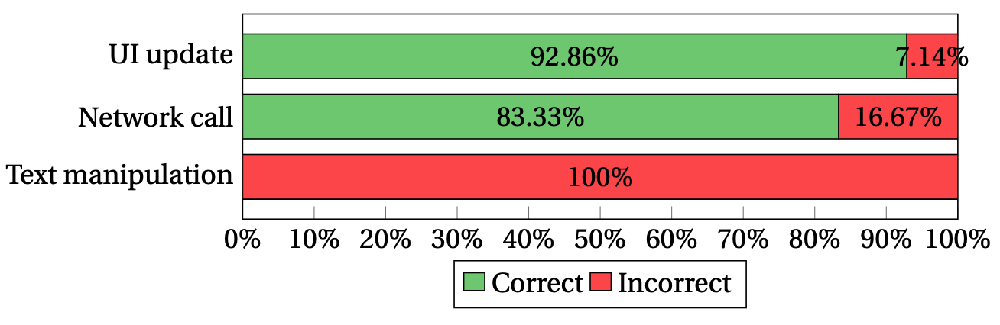

name: footer-template layout: true .footer[ Av Max Wilén & Jacob Ringfjord ] --- class: center, middle # Automatisk *versionsjämförelse* och *ändrings-kategorisering* <div style="margin-top: -30px; padding-left: 350px;"> <h3>- endast med tillgång till binärerna</h3> </div> --- # Agenda - **Arbetsprocess** - **Introduktion** - **Jämförelse mot tidigare arbete** - **Metod** - **Resultat** - **Diskussion** - **Framtida arbete och utmaningar** --- class: breadcrumb > **Arbetsprocess** → Introduktion → Tidigare arbete → Metod → Resultat → Diskussion → Framtida arbete och utmaningar ## Arbetsprocess - Träffade Jesper på en gästföreläsning på LiU - Projektplan påbörjades i en kurs under november-december - Fått ta del av ett tidigare kandidatarbete handlett av Jesper - Veckovisa möten från slutet av januari --- class: breadcrumb > ~~Arbetsprocess~~ → **Introduktion** → Tidigare arbete → Metod → Resultat → Diskussion → Framtida arbete och utmaningar ## Introduktion **Problem:** Kunskap och antaganden från tidigare analys kan bli föråldrad vid nya versioner **Syfte:** Utveckla en metod för detektering och kategorisering av kodändringar *(Fokus ligger på Android. Signal-Android används som testdata)* **Bidrag:** Effektivisera ad-hoc processen genom att snabbt kunna identifiera ändringarna som påverkar den forensiska analysen <br> <br> <br> >[!Important] > **Viktigt** > <br>- Inga forensiska verktyg har använts. > <br>- Projektet fokuserar enbart på jämförelse av Android binärer --- class: breadcrumb > ~~Arbetsprocess~~ → ~~Introduktion~~ → **Tidigare arbete** → Metod → Resultat → Diskussion → Framtida arbete och utmaningar ## Jämförelse mot tidigare arbete - **Kategorisering baserad på reguljära med nyckelord i Android-syntax** - **Mer djupgående metod** - Tittar på dekompilerad P-code från Ghidra. - Subkategorier för intressant och icke-intressanta ändringar - **Mer konkret resultat** - Siffror på träffsäkerhet för nyckelord och kategorier - **En applikation med GUI** - Inkluderar diffar i den dekompilerad P-code:en - Enkelt att söka, sortera och filtrera bland intressanta ändringar --- class: breadcrumb > ~~Arbetsprocess~~ → ~~Introduktion~~ → ~~Tidigare arbete~~ → **Metod** → Resultat → Diskussion → Framtida arbete och utmaningar ><br> > >↳ **Översikt** → Detektera ändringar → Kategorisering → Evaluering ## Metod >[!check] > **Framtagen pipeline** ><br> ><br> >- 3 olika moduler används för att generera en HTML rapport ><br> ><br> >- Fokus på Android APKer, men Ghidriff/Ghidra stödjer fler arkitekturer <br> <div style="text-align: center;"> <img src="res/images/pipeline-modules.png" width="80%"> </div> --- class: breadcrumb > ~~Arbetsprocess~~ → ~~Introduktion~~ → ~~Tidigare arbete~~ → **Metod** → Resultat → Diskussion → Framtida arbete och utmaningar ><br> > >↳ ~~Översikt~~ → **Detektera ändringar** → Kategorisering → Evaluering ## Metod - **Efter bakgrundsarbete valde vi Ghidriff, ett Python baserat verktyg som använder Ghidra APIet** *(headless)* - **Ghidriff kan varken kategorisera eller ranka ändringar** - **Ghidriff producerar en detaljerat output** - Vi har kunna fokusera på att arbeta med datan istället för att extrahera den - Inga ändringar har behövt göras i verktyget. Det har kunnat integreras i vårt egna verktyg <div style="text-align: center;"> <img src="res/images/ghidriff-logo.png" width="40%"> </div> --- class: breadcrumb > ~~Arbetsprocess~~ → ~~Introduktion~~ → ~~Tidigare arbete~~ → **Metod** → Resultat → Diskussion → Framtida arbete och utmaningar ><br> > >↳ ~~Översikt~~ → **Detektera ändringar** → Kategorisering → Evaluering ## Metod >[!info] > Så arbetar Ghidriff ><br> > <div class="mermaid"> flowchart LR a(old binary - rpcrt4.dll-v1) --> b[GhidraDiffEngine] c(new binary - rpcrt4.dll-v2) --> b b --> e(Ghidra Project Files) b --> diffs_output_dir subgraph diffs_output_dir direction LR i(rpcrt4.dll-v1-v2.diff.md) h(rpcrt4.dll-v1-v2.diff.json) j(rpcrt4.dll-v1-v2.diff.side-by-side.html) end </div> --- class: breadcrumb > ~~Arbetsprocess~~ → ~~Introduktion~~ → ~~Tidigare arbete~~ → **Metod** → Resultat → Diskussion → Framtida arbete och utmaningar ><br> > >↳ ~~Översikt~~ → ~~Detektera ändringar~~ → **Kategorisering** → Evaluering ## Metod >[!info] > Så kategoriserar vi > <br> > <br> >- **Syntax matching med hjälp av reguljära uttryck** > <br> > <br> >- **Fördefinierade kategorier med tillhörande keywords** <br> >> Delas upp i två typer av kategorier: <div class="columns"> <div class="column"> <h4>Kritiska</h4> Operationer som har <strong>större</strong> chans att påverka forensiska verktyg </div> <div class="column"> <h4>Icke-kritiska</h4> Operationer som har <strong>mindre</strong> chans att påverka forensiska verktyg </div> </div> --- class: breadcrumb > ~~Arbetsprocess~~ → ~~Introduktion~~ → ~~Tidigare arbete~~ → **Metod** → Resultat → Diskussion → Framtida arbete och utmaningar ><br> > >↳ ~~Översikt~~ → ~~Detektera ändringar~~ → **Kategorisering** → Evaluering ## Metod | ***Kritisk* kategori** | **Ändringar i..** | |------------------------|---------------------------| | `Data storage` | ..datastruktur, nya läsningar och skrivningar, etc.|<br><br> | `File write` | ..tillägg eller borttagning av filer.|<br><br> | `Logging` | ..vad, var, när och hur data loggas.|<br><br> | `Authentication` | ..in/ut-loggningsprocesser, sessionshantering, etc.|<br><br> | `Error handling` | ..hur fel och undantag fångas, hanteras eller loggas, etc.|<br><br> | `Cryptographic` | ..krypteringsalg., nyckelhantering, hashmetoder, etc.|<br><br> --- class: breadcrumb > ~~Arbetsprocess~~ → ~~Introduktion~~ → ~~Tidigare arbete~~ → **Metod** → Resultat → Diskussion → Framtida arbete och utmaningar ><br> > >↳ ~~Översikt~~ → ~~Detektera ändringar~~ → **Kategorisering** → Evaluering ## Metod | ***Icke-kritisk* kateg.** | **Ändringar i..** | |------------------------|---------------------------| | `UI update` | ..användargränssnitt (ex. Views, layouter, etc.) |<br><br> | `Network call` | ..nätverksoperationer, API-anrop, Endpoints|<br><br> | `Library function` | ..externa bibliotekspaket.|<br><br> | `Text manipulation` | ..textsträngar, promptar, etc. *(snabb ändring krävs)*|<br><br> --- class: breadcrumb > ~~Arbetsprocess~~ → ~~Introduktion~~ → ~~Tidigare arbete~~ → **Metod** → Resultat → Diskussion → Framtida arbete och utmaningar ><br> > >↳ ~~Översikt~~ → ~~Detektera ändringar~~ → **Kategorisering** → Evaluering ## Metod <div class="columns">   </div> >[!info] >Förtydligande ><br> >**"Normala"**: Ord som endast är relevanta i en kategori, ><br> >**"Tvetydiga"**: Ord som med rimlighet kan finnas i flera kategorier. --- class: breadcrumb > ~~Arbetsprocess~~ → ~~Introduktion~~ → ~~Tidigare arbete~~ → **Metod** → Resultat → Diskussion → Framtida arbete och utmaningar ><br> > >↳ ~~Översikt~~ → ~~Detektera ändringar~~ → ~~Kategorisering~~ → **Evaluering** ## Metod **Varje ändring** (metod/funktion) **blir tilldelad en poäng.** Påverkande faktorer - Antal tilldelade kategorier - “Normala” ord får 1p - “Tvetydiga” ord får 0.5p <br> <br> **Syfte:** Dem ändringarna med mest relevant data ska hamna först --- class: breadcrumb > ~~Arbetsprocess~~ → ~~Introduktion~~ → ~~Tidigare arbete~~ → ~~Metod~~ → **Resultat** → Diskussion → Framtida arbete och utmaningar ><br> > >↳ **Översikt** → Träffsäkerhet (kategorier) ## Resultat <div class="columns"> >[!check] >Inhämtade resultat ><br> ><br> >**91.4%** av ändringarna detekterades ><br> ><br> >**78.6%** av dessa fick rätt status ><br> ><br> >**74.3%** fick rätt kategori ><br> > Kritiska **77.9%** ><br> > Icke-kritisk **69.8%** ><br> ><br> >**3.3%** av unika ändringar kategoriseras som uncategorized  </div> --- class: breadcrumb > ~~Arbetsprocess~~ → ~~Introduktion~~ → ~~Tidigare arbete~~ → ~~Metod~~ → **Resultat** → Diskussion → Framtida arbete och utmaningar ><br> > >↳ ~~Översikt~~ → **Träffsäkerhet (kategorier)** ## Resultat <div class="columns">   </div> <br> >[!question] >Varför får kategorierna `Cryptographic`, `File write` och `Text manipulation` **0%** rätt träffar? ><br> ><br> >**1)** Om kategorin inte finns i källkods-ändringarna kommer det påverka resultatet pga. binärt sätt att redovisa resultat. ><br> ><br> >**2)** Av att läsa resultatet går det se att träffsäkerheten främst påverkas av hur många korrekta träffar som görs. Alla kategorier har en liknande mängd inkorrekta matchningar --- class: breadcrumb > ~~Arbetsprocess~~ → ~~Introduktion~~ → ~~Tidigare arbete~~ → ~~Metod~~ → ~~Resultat~~ → **Diskussion** → Framtida arbete och utmaningar ## Diskussionspunkter - **Effektiv negligering av irrelevanta ändringar** *(hög träffsäkerhet av UI-ändringar och nätverksanrop)* - **Subjektiv manuell analys skapar tveksamheter i resultat med** *(små mängder sampel punkter → Mer tillförlitligt vid större mängd)* - Svårt att hitta testdata där alla kategorier blir representerade - **Vad är en korrekt kategorisering?** - +/- spel där resultatet är lite skevt åt båda håll - **Externa negativa påverkningar** - Vissa `.dex` -filer går aldrig igenom Ghidra/Ghidriff. **Oklart varför!** --- class: breadcrumb > ~~Arbetsprocess~~ → ~~Introduktion~~ → ~~Tidigare arbete~~ → ~~Metod~~ → ~~Resultat~~ → ~~Diskussion~~ → **Framtida arbete och utmaningar** ## Framtida arbeten och utmaningar <div class="columns"> <div class="column"> <h4>1) Förbättring av pipeline</h4> <ul> <li>Titta på rekursiva funktionsanrop för att få hela kedjan.</li> <br> <li>ML för kategorisering</li> </ul> </div> <div class="column"> <h4>2) Säkrare resultat</h4> Gå ifrån en manuell analys för identifiering av korrekt data. <ul> <li>Med ML?</li> <br> <li>Köra vår kategorisering på källkoden?</li> </ul> </div> </div> --- class: middle, center # Demo!